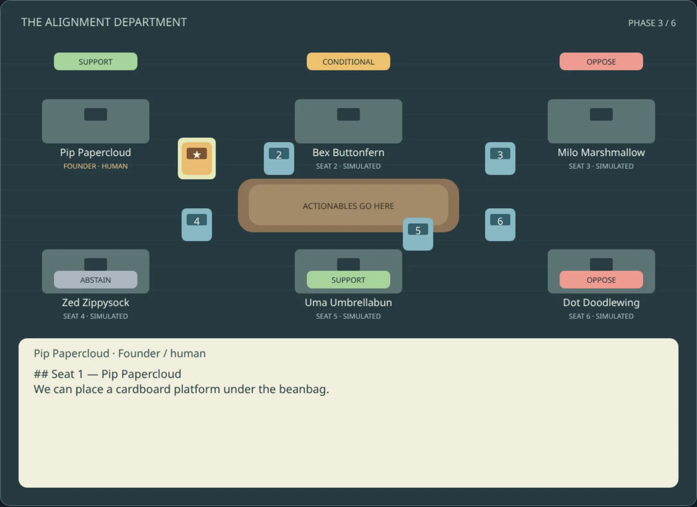
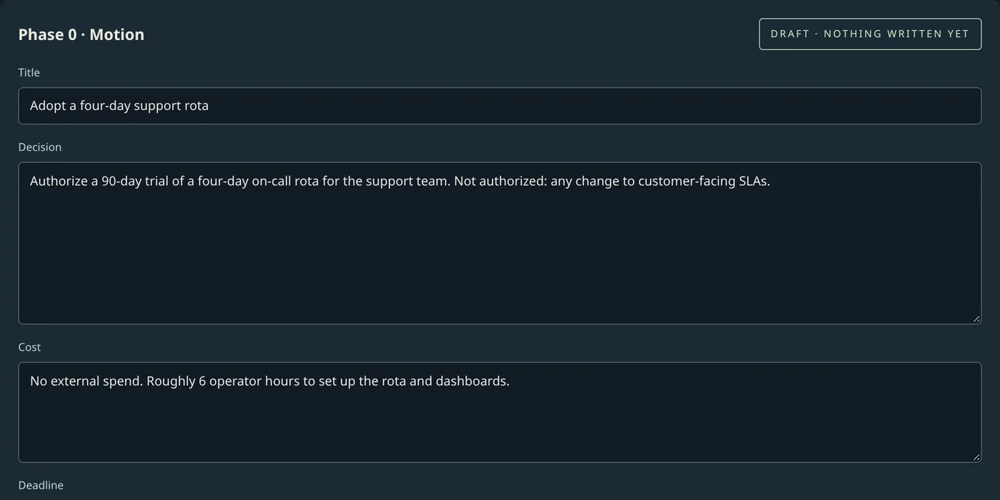
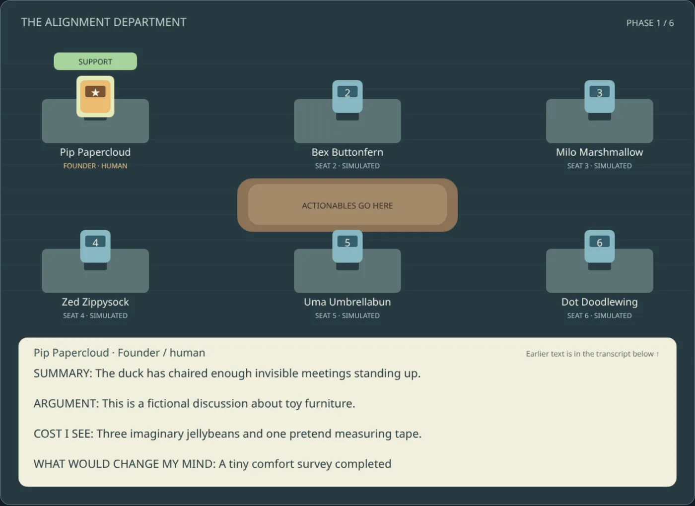
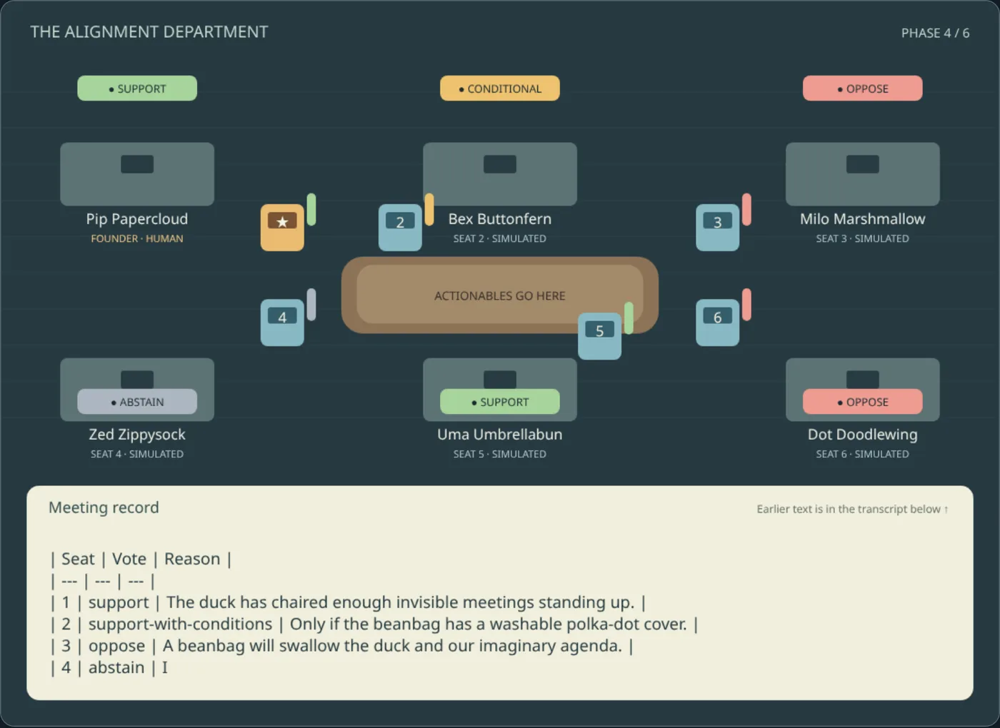
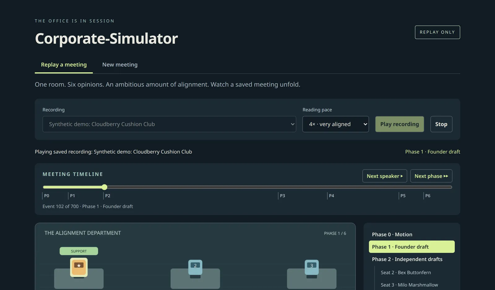

Open-source · self-hosted · MIT
Put your next decision in front of a board that argues back.
Corporate-Simulator is a tiny animated office for adversarial review. Write a motion, seal your own position, and watch five simulated reviewers draft independently, debate once, and vote — with every word saved as plain files you own.
v0.3.0 — replay with navigation, plus writing new motions and founder drafts. Live model generation is next.

Isolation you can see
Each reviewer's draft is its own record, written before anyone debates. The office shows that separation instead of blurring it into one transcript.
You go first, sealed
Your own position is committed before the board speaks, so the simulation can't quietly anchor your judgment.
Plain files, real git
Motions, drafts, votes and decisions are markdown in a folder you control. Sealing runs a real git commit.
Dissent is never summarized
Votes and their reasons are kept in full, and the clerk's minutes are clearly labeled non-binding.
How a meeting runs
The same process Spillers Technology uses by hand for real business decisions, turned into something you can watch, scrub, and replay.
Write the motion in your own words
Decision, cost, deadline, and links to anything it depends on. A live preview shows the exact markdown that will be written.
Nothing touches disk until you press Seal & Commit. After that the record is locked — you supersede it, you don't edit it.

Your position first, then five independent ones
The founder — the one gold, human seat — commits a position before anything else runs. Then each simulated seat lays out its own draft at its own desk.

One debate round, then a recorded vote
All positions become visible to each other for a single round. Each seat then votes with a reason — support, conditional, oppose, or abstain — and the tokens show up right in the room.

Jump to any moment
A table of contents covers every phase and every seat's draft. Drag the timeline to seek, skip to the next speaker or phase, and change reading pace mid-playback.
Phase 6 is yours: the board advises, you decide — including overriding the vote, on the record.

What's real today
No faked features. If something isn't wired up, the app says so.
- Replay any finished meeting folder: motion, sealed founder draft, independent drafts, debate, vote, clerk minutes, decision record
- Animated six-seat office with progressive speech and vote gestures
- Table of contents, drag-to-seek timeline, adjustable reading pace
- Write and seal Phase 0 (motion) and Phase 1 (founder draft) with a real git commit
- Live seat generation — actually dispatching models to argue a new motion
- Model-configuration console, with at least one seat locked to a different vendor
- CLI sign-in, avatars, sound
Run it locally
This page is a landing page, not the app — the app needs a live backend that static hosting can't run. About ten minutes with Node.js 22+, no Docker required:
# clone, then:
npm --prefix backend ci && DATA_DIR="$PWD/backend/test-fixtures" npm --prefix backend start
# in a second terminal:
npm --prefix frontend ci && npm --prefix frontend run build
BACKEND_URL=http://localhost:4000 npm --prefix frontend start
# open http://localhost:3000That plays the bundled, entirely fictional demo shown in the screenshots above. Point
DATA_DIR at your own board-style process directory to replay your own
meetings — your data stays on your machine.